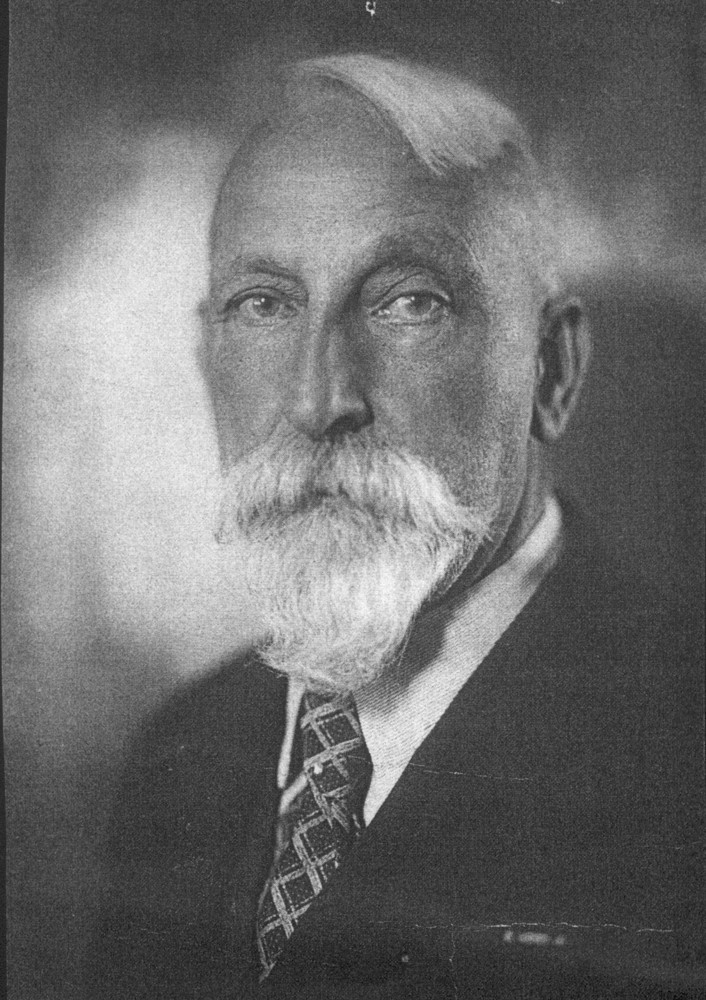

Biografie · Den Haag en Loenen
Johan Willem Georg Coops
Cricketer, voetballer en rijksambtenaar (1873–1951)
Willem Coops speelde cricket voor HCC en voetbal voor HVV. Naast zijn sportloopbaan werkte hij bij de rijksoverheid. Het Haagse familiearchief laat ook zien hoe hij vluchtelingen hielp en hoe hij en zijn vrouw Emilia Broese van Groenou tijdens de bezetting betrokken waren bij een onderduikgezin.
‹ Alle biografieën en historische artikelenMet het Nederlandse cricketelftal naar Engeland
Johan Willem Georg Coops, in de familie Willem genoemd, werd op 16 maart 1873 in Den Haag geboren als zoon van Johan Willem Georg Coops en Pieternella Fredrika Geelhoed. Hij groeide op in een gezin van zeven kinderen. Volgens het gedenkboek van de Haagsche Cricketclub speelde hij van 1888 tot 1915. De familiepublicatie telt dertig wedstrijden voor het Nederlandse cricketelftal, waarmee hij drie keer door Engeland toerde.


De wedstrijdverslagen uit 1906 laten zien waar hij goed in was. Op de Engelse tour bleef hij tegen het elftal met de bekende W.G. Grace als laatste Nederlandse slagman aan de kant van Van Gogh overeind. Tegen Haslemere nam hij in de eerste innings zeven wickets en stond hij als bowler 48 runs toe. Het Algemeen Handelsblad prees ook zijn veldspel. Algemeen Handelsblad, 17 augustus 1906 · 25 augustus 1906.
Willem werd erelid van HCC en van de Nederlandsche Cricket Bond. Clubgenoot Kees Feith herinnerde zich dat Willem meer dan eens afzag van een punt als een tegenstander uitgleed. Ook de terugblikken in Het Vaderland, de Nieuwe Rotterdamsche Courant en het clubblad van H.C. en V.V. legden na zijn overlijden de nadruk op zijn omgang met medespelers en tegenstanders. Coops Kroniek en de daarin aangehaalde terugblikken.
HVV, het Bondselftal en een hockeyplan
Van 1889 tot 1905 voetbalde Willem bij de Haagsche Voetbal Vereeniging. Volgens de familiepublicatie werd hij met HVV zeven keer landskampioen en speelde hij voor het Bondselftal, de voorloper van het Nederlands elftal. In 1908 werd hij ook bij HVV erelid. Haagse Voetbalhistorie, erelijst HVV.
In augustus 1898 stond zijn naam onder een circulaire voor de oprichting van een Nederlandschen Hockey- en Bandy-Bond. Willem zat met Ch. van der Poll, C. Feith en A.A. Kool in het voorlopige comité. De oproep nodigde belangstellenden uit voor een vergadering op 12 augustus in hotel Krasnapolsky in Amsterdam. Het Nieuws van den Dag, 2 augustus 1898, sportrubriek.
Van hoofdcommies tot administrateur
Bij zijn huwelijk in 1909 was Willem hoofdcommies bij het Departement van Landbouw, Nijverheid en Handel. Later was hij administrateur bij het Ministerie van Waterstaat. Inge de Wilde noemt hem chef van de afdeling Scheepvaart. Een uitgave uit 1913 op naam van J.W.G. Coops behandelde de Franse scheepvaartwet van 1909 en de wijziging van 1912. Haags Gemeentearchief, huwelijksakte 1123 · Inge de Wilde · Bibliotheekcatalogus Anet.
Het decoratieregister vermeldt een Johan Willem Georg Coops als Ridder in de Orde van de Nederlandse Leeuw, in overeenstemming met de vermelding bij Willem in Nederland’s Patriciaat. De online registratie geeft geen datum. Een Nijmeegse krant uit 1892 in het familiearchief vermeldt een andere onderscheiding voor een J.W.G. Coops die toen hoofdcommies bij Justitie was. Die functie past bij Willems gelijknamige vader (1828–1899). Nationaal Archief, Kanselarij der Nederlandse Orden, toegang 2.02.32 · Genealogie, zijn vader.
Emilia Broese van Groenou
Emilia, roepnaam Miel, werd op 28 augustus 1876 in Breda geboren als dochter van Wolter Broese van Groenou en Jeannetta Emilia Wieseman. Ze trouwde op 1 juli 1909 in Den Haag met Willem. De akte noemt haar zanglerares. Volgens de beschrijving van haar archief bij het IIAV studeerde ze zang in Den Haag en in het buitenland. In 1914 bracht zij een van de vroegste Nederlandse Montessori-klasjes onder in de tuinkamer van haar ouderlijk huis aan de Parkweg in Den Haag. Inge de Wilde, Lang leve de familie.
De inventaris van haar correspondentie bevat brieven van onder anderen Clara Meijer-Wichmann, Rosika Schwimmer, Lida Gustava Heymann en Anita Augspurg. Op een foto van 5 juli 1922 staat Miel naast haar moeder en Aletta Jacobs bij de eerste Tweede Kamerverkiezingen waaraan vrouwen konden deelnemen. Bekijk de foto bij Atria.
Willem en Miel kregen drie dochters. Wilhelmina Emilia Suzanna (Milisa, 1912) werd hoofdbibliothecaresse bij UNESCO in Parijs. Dorothea (Thea, 1916) gaf Frans in het Montessori-onderwijs. Aletta Henriette (Letteke, 1921) werkte als secretaresse bij het Ministerie van Buitenlandse Zaken. Milisa droeg later stukken over het sportverleden van haar vader aan voor de Coops Kroniek. Genealogie van de familie Coops.
Vluchtelingenhulp en onderduik op Groenouwe
Het Haagse familiearchief beschrijft stukken over Willems hulp aan Hongaarse en Duitse vluchtelingen tussen 1921 en 1940. Onder de stukken zijn brieven van Victoria Oppenheimer-von Drygalski uit 1938 en 1939 over de pogingen van haar gezin om Duitsland te verlaten en de hulp die Willem daarbij bood. Ook bewaart het archief de tekst van een gedicht in zijn hand bij de eerste verjaardag van de Februaristaking in 1942.
Tijdens de bezetting werd Willem uit Den Haag geëvacueerd. De archiefbeschrijving noemt zijn verblijf in Nijmegen en Loenen. Groenouwe was het familielandgoed bij Loenen, waar Emilia’s vader een landhuis had laten bouwen. Daar verbleef het Joodse gezin Souget-Visser van 1943 tot 1945 onder de schuilnaam Soelen. In het familiearchief zitten de herinneringen van Caroline Souget-Visser, een menu van het gezamenlijke kerstdiner in 1945 en een diploma van een boomplanting van het Joods Nationaal Fonds voor de hulp van het echtpaar Coops-Broese van Groenou. Deze gegevens komen uit de openbare archiefbeschrijving. Haags Gemeentearchief, familiearchief 1019-01, oorlogswegwijzer · Rijksdienst voor het Cultureel Erfgoed, landgoed Groenouwe.
Willem overleed op 26 juli 1951 in Den Haag, 78 jaar oud. Emilia overleed daar op 13 maart 1966, op 89-jarige leeftijd. Overlijdensakte Willem · Overlijdensakte Emilia.
Bronnen en verder lezen
- Coops Kroniek, ‘Johan Willem Georg Coops, portret van een cricket-international’, uit het familiearchief. Het artikel verwijst naar het Gedenkboek van de Haagsche Cricketclub, 1878–1928, het clubblad van H.C. en V.V., Het Vaderland en de Nieuwe Rotterdamsche Courant van 28 juli 1951.
- Nederland’s Patriciaat, genealogie Coops, en C. Coops, Vierhonderd jaar molenaars. Genealogie van een geslacht Coops.
- IIAV, Annemarie Kloosterman, Plaatsingslijst van het archief van Miel Coops-Broese van Groenou, 1990/1993, en de bijbehorende archiefbeschrijving, beide uit het familiearchief.
- Het Haags Gemeentearchief vermeldt onder de in 2026 openbaar geworden stukken onder meer Willems correspondentie uit 1948–1951 (inv. 341) en die van Miel uit dezelfde jaren (inv. 707). Lijst vrijgekomen dossiers, toegang 1019-01.
Heeft u foto’s, brieven of wedstrijdverslagen over Willem of zijn gezin? Deel een aanvulling met Familie Coops.